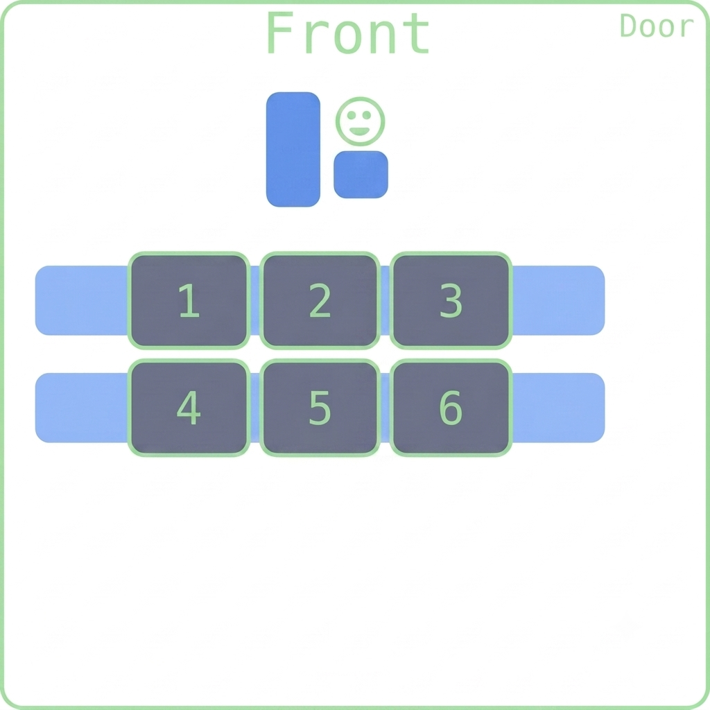

Inheritance
Fred Agbo
November 2, 2026
Happy New Month and New Week!
- Class grouping today: Scan the QR code or go to https://tools.jedrembold.prof/daily
- Class code is
GrtN9 - Introduce yourselves! What class assignment do you inherit from last month?

Quick Announcements
- Project ImageShop is due today at 10:00pm
- Second midterm exam is this Friday 6th of November in
this class!.
- Exactly the same format as it was in Midterm 1 exam
- Written in Canvas
- Partially opened (Remember the definition of partially opened)
- No programming in any development environment such as VS Code
- You can look up your past assignments on GitHub or in your note but not from the VS code
- You CANNOT Google or use any AI and/or any GenAI tools
- Remember you MUST share your entire screen from the proctoring tool
during exams
- You are being watched!
- Focused on Chapters 4-6, and 8 (Graphics, Functions, Interactive
Programs, and Lists)
- Practice questions will be posted by tomorrow
- No problem set this week: just studying for exam
Inheritance: Reuse and Extend
- Inheritance lets a new class reuse and specialize the behavior of an existing class.
- The existing class is the parent (or base); the new class is the child (or subclass).
- A child gets the parent’s methods and attributes, and can add its own.
class Employee:
def __init__(self, name):
self.name = name
def introduce(self):
return f"Hi, I'm {self.name}."
class Manager(Employee):
def approve_request(self):
return f"{self.name} approved the request."
manager = Manager("Sam")
print(manager.introduce())
print(manager.approve_request())A Child Can Specialize Behavior
- A subclass can define a method with the same name as a parent method.
- This is overriding: calling that method on a child uses the child’s version.
class Employee:
def describe_role(self):
return "I work at the company."
class Manager(Employee):
def describe_role(self):
return "I manage a team."
worker = Employee()
manager = Manager()
print(worker.describe_role())
print(manager.describe_role())super() Calls Parent Behavior
super()gives a subclass access to methods from its parent class.- Use
super().__init__(...)to initialize the parent’s attributes instead of repeating that code. - The child can then add its own attributes.
class Employee:
def __init__(self, name):
self.name = name
class Manager(Employee):
def __init__(self, name, team_size):
super().__init__(name)
self.team_size = team_size
manager = Manager("Sam", 4)
print(manager.name, manager.team_size)Extend Parent Method with super()
- An override can keep the parent’s behavior and build on it.
- Call
super().method_name(...)from the child’s method.
class Employee:
def describe_role(self):
return f"{self.name} works at the company."
class Manager(Employee):
def __init__(self, name, team_size):
super().__init__(name)
self.team_size = team_size
def describe_role(self):
description = super().describe_role()
return f"{description} They lead {self.team_size} people."
manager = Manager("Sam", 4)
print(manager.describe_role())Guided Practice: A More Specific Pet
- Start with a
Petclass that stores a name and has aspeakmethod. - Create a
Dogsubclass that usessuper()to initialize the name. - Override
speakso a dog saysWoof!. - Predict: What will
print(dog.name, dog.speak())display?
class Pet:
def __init__(self, name):
self.name = name
def speak(self):
return "..."
class Dog(Pet):
def __init__(self, name):
super().__init__(name)
def speak(self):
return "Woof!"
dog = Dog("Milo")
print(dog.name, dog.speak())Group Problems LO’s
- Define a class that inherits from another
- Override parent methods in a child class
- Properly use
super()in a child constructor
Inherit Last week’s BankAccount:
- A
BankAccounthas an owner and a balance. - Add a
SavingsAccountthat reuse the parent’s setup, add an interest rate, and report its account type. - Try it: Implement
describe()in the child by extending the parent’s description withsuper().
Problem 1a: I’m on a Boat!
- Grab the starter codes from the Discord
- This is a coding problem. Work in pairs on a single computer, and discuss your algorithm BEFORE YOU WRITE ANY CODE.
- I have provided to you already a
Vehicleclass, which tracks several attributes and includes an initial__repr__method - Your task:
- Create a new
Boatclass that inherits fromVehicle - Its constructor should only accept a weight, as the terrain type
should always be set to
"water" - Override its
__repr__method to correctly print out command needed to create the new boat objects. So it should return something like"Boat(5000)", if 5000 was the weight.
- Create a new
Problem 1b: I’m on a really big boat!
- Swap who is typing!
- Now define a
Carrierclass that inherits from boat - A carrier has two new attributes to track:
- A
capacity(integer) which should be provided when a carrier is created - An
onboardlist which tracks what planes are currently onboard. It always starts empty when the carrier is created.
- A
- Override its
__repr__method to correctly print out command needed to create the new Carrier objects. So it should return something like"Carrier(8000, 3)", if 8000 was the weight, and it had a capacity for 3 planes
Problem 1c: Insert Plane Here
- Swap who is typing!
- Add a method to the
Carrierclass ofadd_plane, which accepts a plane’s weight as an argument- If the number of planes currently on the carrier is less than its capacity, then add the weight to the onboard list and increase the carriers own weight by that amount
- Otherwise, just print
"Deck full!"